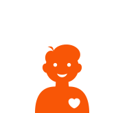

O co jde
Jsme štědrá sociální síť, kde dáváte dary a vzájemně si plníte svá přání. Od legračních maličkostí až po velké věci, zkušenosti i životní moudrost. Co vás baví a naplňuje, posíláte dál. A co sami potřebujete, se vám vrací od druhých. Seznamte se s lidmi na stejné vlně a společně sdílejte radost naživo.
Jak na to
Je to hračka. Během pár minut si založíte profil a už jste mezi námi! Doplňte si celý profil, ať jste šik a vrhněte se na tržiště, naše pulzující srdce. Zde nabízíte své dary a žádáte druhé o splnění svých přání. Zajímáte se o něco? Najděte si svou komunitu a získejte inspiraci od lidí, kteří jsou vám blíž. Radujte se a seznamujte, dávejte a přijímejte, děkujte a hodnoťte. Ocení to všichni. A nejlepší na konec? Je to jen začátek. Směle do toho.
-
Zaregistruj se
-
Sdílej dary
-
Najdi dary
-
Vytvoř si přátele
-

Buď šťastný
O Hearthu
Myšlenka sítě pro sdílení darů a zkušeností se zrodila v hlavě Libora Malého už v roce 2008 při nástupu globální ekonomické krize.
Jak vznikl název Hearth?
Na začátku byla spoustu otázek. Jak pojmenovat místo, kde lidé fungují na principu vzájemné spolupráce? Při hledání odpovědi nás napadla dvě slova – Heart (srdce) a Earth (Země). Obě mají stejný slovní základ. Když je spojíme, je tu Hearth – rodinný krb, ohniště.
Vznikl symbol hodnot, které jsou pro nás důležité a které chceme šířit dál.
Hearth.net začíná na internetu, ale míří dál. Je to náš online nástroj pro lepší fungování ekonomiky daru v reálném prostředí. Díky Hearth.net chceme vytvářet skutečné vztahy i komunity a mít z nich radost. Spolu s vámi. Přidejte se.
- Radost
- Dar/Štědrost
- Hodnota/Cena
- Odpovědnost
- Transparentnost
- Důvěra
- Spolupráce
- Laskavost
- Zpětná vazba
- Zásluhy